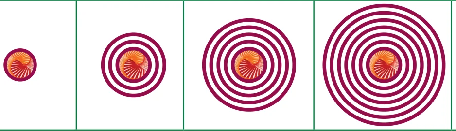
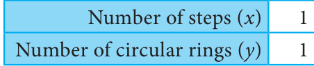
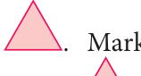
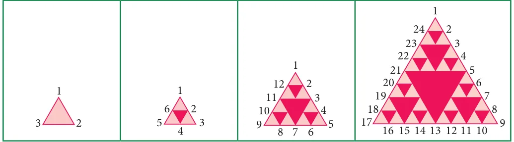
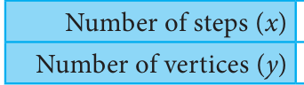
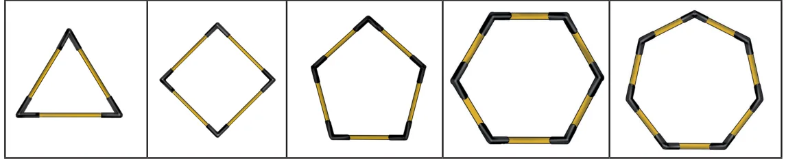
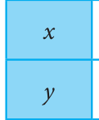
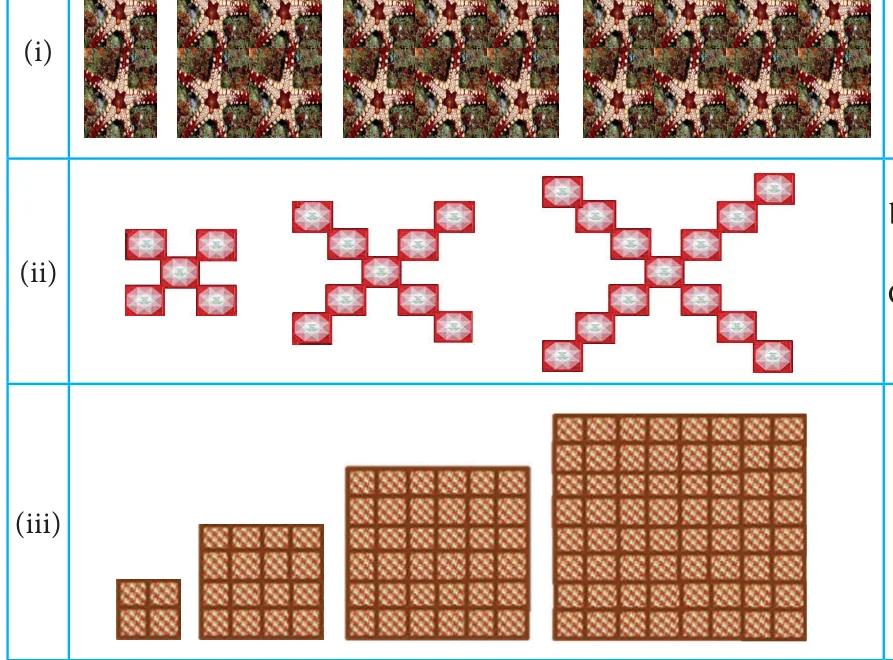

Situation 1
Observe the following pattern
Consider a circular disc . Circular rings of same width are drawn around the disc . Proceed in the same way to get the shapes following a pattern as shown below.

Let us express the above pattern of shapes in the form of a table. Let x denote the number of steps and y denote the total number of circular rings.

Here let us find the relationship between the number of steps and number of circular rings. Hence the relationship between x and y can be generalised as \(y = 2x - 1\)
Situation 2

Consider an equilateral triangle of any size . Mark the midpoints of sides of a
triangle and join them to form four equilateral triangles . Proceed in the same way to get the shapes following a pattern as shown below.

Let us express this repeated process in the form of a table. Here let us find the relationship between the number of steps (x) and total number of vertices (y).

1 2 3 4 …
\(3 \times 2 = 3 3 \times 2 = 6 3 \times 2 = 12 3 \times 2 = 24\) …
Hence, the relationship between x and y can be generalised as \(y = 3 \times (2\) ) . From the above situations, you could have understood that even if an action is repeatedly done, the properties of the shape do not change.
Example 5.1
In the following figures, polygons are formed by increasing the number of sides using
matchsticks as given below.

Find the number of sticks required to form the next three shapes by tabulation and generalisation.
Solution
In the above pattern of polygons, in the first shape ( \(x =1)\), we get a closed shape called
a triangle. Similarly the second shape ( \(x = 2\) ) gives a four sided polygon and the third shape ( \(x = 3)\) is a five sided polygon and continuing in the same way two more shapes are formed. If the number of match sticks required to form each of the shapes is taken as y, then the values of x and y are tabulated as given below.

1 2 3 4 5 ...
3 4 5 7 ... Observe the table and express y in terms of \(\frac{6}{x\) as below :}
when \(x =1\), \(y = 3 = 1+2\)
when \(x = 2\) , \(y = 4 = 2+2\) when \(x = 3\), \(y = 5 = 3+2\) when \(x = 4\) , \(y = 6 = 4+2\) when \(x = 5\), \(y = 7 = 5+2\)
Hence, each of the values of y which we get from the table is 2 more than x. That is
\(y = x + 2\).
Therefore,
6th shape (x=6) will have \(y = 8 = 6+2 (8\) match sticks)
7th shape (x=7) will have \(y = 9 = 7+2 (9\) match sticks)
8th shape (x=8) will have \(y = 10 = 8+2 (10\) match sticks)
We clearly see that the next three shapes will require 8, 9 and 10 matchsticks.
Activity
Observe the pattern given below. Continue the pattern for three more steps.
, , , ___ , ___ , ___ .
Let, ‘x’ be the number of steps and ‘y’ be the number of match sticks. Tabulate the values of ‘x’ and ‘y’ and verify the relationship \(y = 7x+5\).
Try these
- 1.In the given figure, let x denote the number of steps and y denote
its area. Find the relationship between x and y by tabulation.
- 2.In the figure, let x denotes the number of steps and y denotes the number
of matchsticks used. Find the relationship between x and y by tabulation.
- 3.Observe the table given below.
\(x - 2 - 1 0 1 2 8\) ... \(y - 4 - 2 0 2 4\) ? ... Find the relationship between x and y. What will be the value of y, when \(x = 8\).

- 1.Match the given patterns of shapes with the appropriate number pattern and its
generalization.
- a)Sequence :
